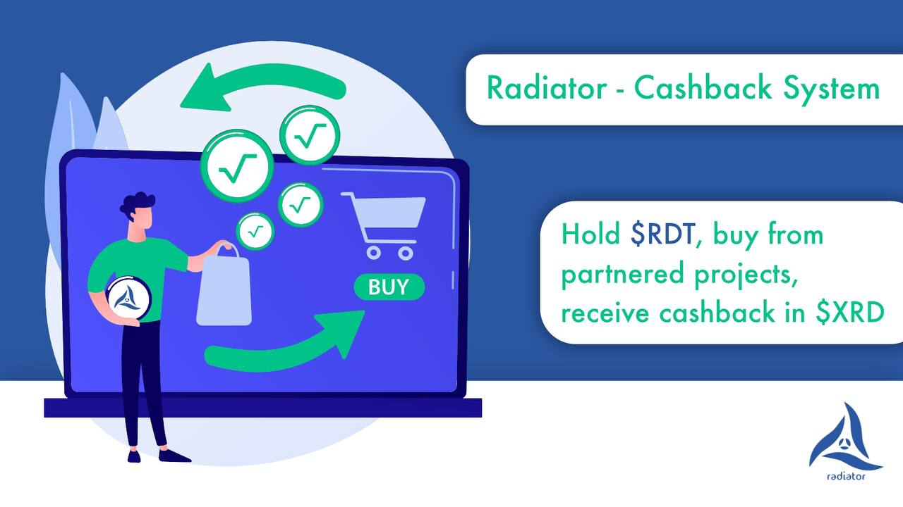

Cashback-System
The native Radiator token \$RDT is basically a „reward-token“. We are establishing a network of partnerships throughout the whole Radix ecosystem. Holders of \$RDT will receive \$XRD cashback, when interacting with goods and services from our partners.
$RDT Utility examples:
- discounts when buying NFTs (Non Fungible Tokens)
- reduced DEX (Decentralized Exchanges) Fees
- discounts on software engineering services
The conditions for these utilities are set by our partners and vary from project to project:
- amount of $RDT to hold in the wallet you are using to interact with goods & services
- holding duration
- others (depending on goods & services)
In our aim to optimize the value transfer within the Radix ecosystem we give recommendations to our partners on how to set the conditions in the best way for everyone.
